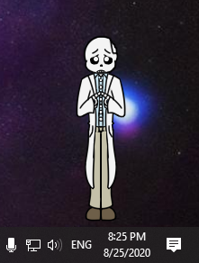

S the Skeleton

S the Skeleton is an Undertale based OC of mine. He's a chill skeleton who just wants to take care of his family, but is haunted by a dark past.
S is by far my most detailed and dynamic ghost, I've put more than 100 hours into developing him. He has a friendship system, so if you treat him kindly you'll unlock more and more content. If you treat him poorly... honestly that route isn't very fleshed out, but it exists.
Some of S's features may feel a little lacking, and that's because I'm not done with them yet! I wanted to get a basic framework running so that I can flesh him out with lots more dialogue and many more options. I have so much more content planned. Turn on auto updates if you want him to let you know when there's something new! He'll never update without your approval.

Double click him anywhere but his face to bring up his menu, and explore from there! He'll also give you some info right on the main menu, such as the date and time, current season, and tempurature/moon phase if you've got weather checking enabled.


S's biggest feature is his family menu, which has 14 family members for you to unlock and ask about. As you unlock more family members, he'll gain more dynamic dialogue! This affects his random dialogue, some menu dialogue, and a lot of what he has to say when you ask about other family members. There's a lot to explore!
He also has a large menu related to AU versions of himself! These don't generally add to the dynamic dialogue, but there is a lot to explore here! Many of the timelines can only be unlocked when you've spent a lot of time with S and he really trusts you.
And much more that I can't fit here! I'm always adding new things to S, so keep an eye out for updates!
Don't mind spoilers and want to know how to unlock some of S's more hidden content? Check under the spoiler tab at your own risk.
RYS mode
RYS mode can be unlocked by booting S while certain conditions are met. He doesn't have as much content as normal S, but I do hope to add more to him in the future!
- Learn about at least 1 of S's family members, by clicking on their highlighted names in his random dialogue.
- Go to the 'do something' menu, and click 'Check'. Investigate for more details.
- Go to his question menu and ask him about his LV.
- Boot him on August 25th or at 8:25, AM or PM.
- After you've spoken to RYS a few times, if you close him and open the ghost again, you'll be back to S. Ask him about RYS in his question menu, and you'll unlock an option on the main menu to switch between the two at will.
You can ask RYS questions about himself and his life, and eventually he may ask you a question or two if you're kind to him. You can also change his name, and perform standard actions like petting and hugging.
Member of the Ukagaka/Ghost Development and Download webring
Previous Random Next